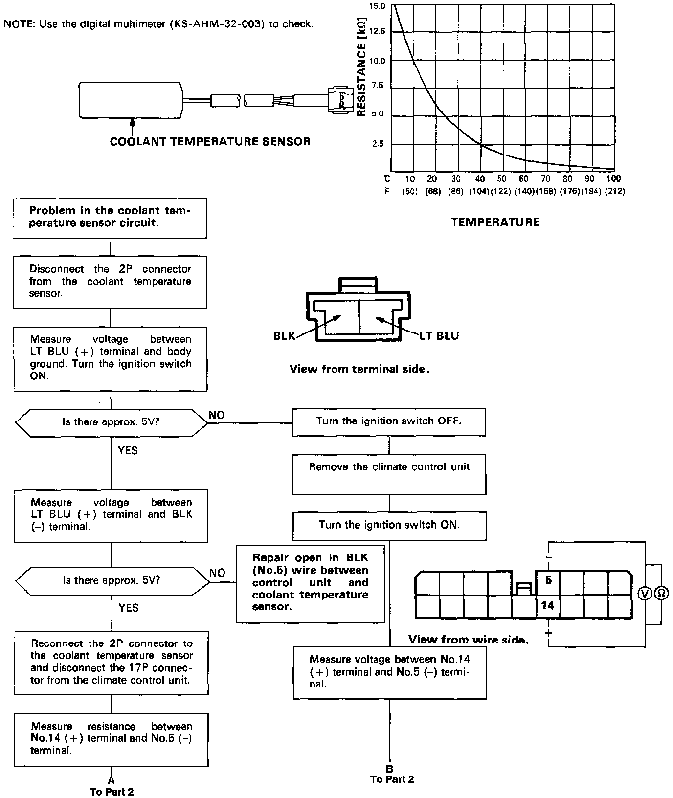
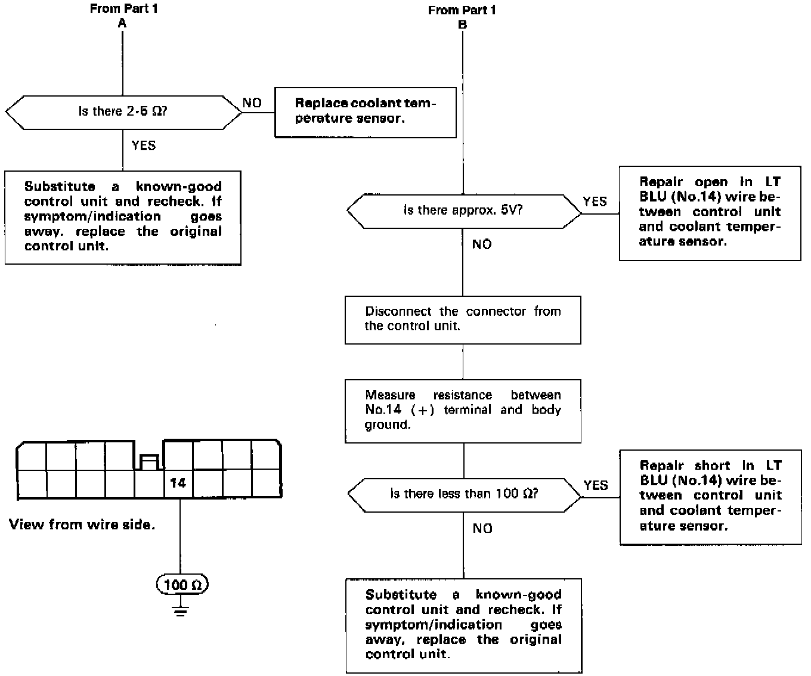

Coupe
Self-diagnosis indicator light B comes on: Indicates a problem in the Coolant Temperature Sensor circuit.The coolant temperature sensor is a temperature dependant resistor (thermistor). The resistance of the thermistor decreases as the coolant temperature increases.

